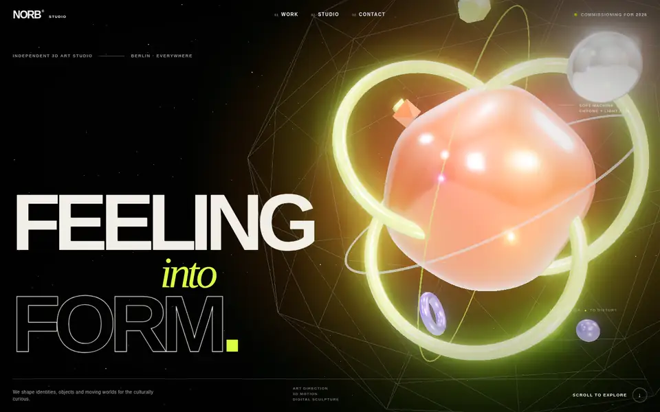

Art Studio 3D

DeepSeek · 2026-11-24 · 历史流程 completed
桌面原图 · 手机图 · Judge 原始记录


题面
Generate an innovative and immersive 3D art studio home page. The studio's name is Norb Studio. Use abstract 3D shapes and motion graphics to create a dynamic and engaging user experience, demonstrating the creativity of the studio. The homepage should feature: 1. A 3D loading screen that showcases a rotating cube, each face containing one letter and repeats Norb Studio's name as it spins. 2. A hero section with a full-screen 3D environment that includes interactive floating shapes. 3. A nice narrative section that speaks the story and goal of Norb Studio as you scroll down, with smooth transitions and bold visual effects. 4. A gallery section that displays a carousel of art pieces created by Norb Studio vertically, arrayed in a 3D helix shape and rotates as the user scrolls down. 5. A contact section with a 3D interactive form, and when the user hovers over the input fields, they animate and change color, providing a tactile experience.
Judge 完整评分与 Rubrics（总分 83.8/100）
历史自动 Judge，尚未人工校准。页面部署检查不是重新评分，历史分数保持不变。
历史工作流：completed；历史运行：PASS；历史三维：PASS；必做断言：NOT_EVALUATED。
Norb Studio runs as a cohesive 3D art-studio experience: the WebGL hero, pinned narrative, scroll-driven helix, responsive navigation, and interactive contact form all work. The only unverified stated element was the transient loading cube; a 390px contact-header overlap was the clearest visual and stability defect.
Judge 五维评分
| 维度 | 原始分 /4 | 权重 | 加权分 | Judge 理由（原文） | 原记录证据路径 |
|---|---|---|---|---|---|
| 指令完成度 | 3 | 25% | 18.75 | All observable core flows are delivered coherently: hero, floating-shape interaction, narrative, helix gallery, and interactive contact form. The specifically requested loading-cube presentation could not be observed after reload, so full four-point delivery is not established. | evidence/page-2026-11-24T17-20-16-948Z.jpeg; evidence/page-2026-11-24T17-20-29-718Z.jpeg; evidence/page-2026-11-24T17-22-18-344Z.jpeg; evidence/page-2026-11-24T17-23-12-920Z.jpeg; evidence/page-2026-11-24T17-24-04-219Z.jpeg |
| 三维表现与空间合理性 | 4 | 35% | 35.0 | Hero geometry, scale, bloom lighting, occlusion, and material response consistently serve the brief. The gallery's helix gives strong perspective and depth relationships in both scroll directions; the contact form adds a coherent dimensional treatment without compromising input use. | evidence/page-2026-11-24T17-20-16-948Z.jpeg; evidence/page-2026-11-24T17-20-55-277Z.jpeg; evidence/page-2026-11-24T17-23-00-854Z.jpeg; evidence/page-2026-11-24T17-23-24-540Z.jpeg; evidence/page-2026-11-24T17-23-35-680Z.jpeg |
| 交互与动态体验 | 3 | 20% | 15.0 | Pointer distortion, gallery forward/reverse scrolling, mobile menu navigation, and form hover/focus/typing all work repeatedly and naturally. The transient loading sequence remains unverified, which prevents the highest fully satisfied interaction anchor. | evidence/page-2026-11-24T17-20-55-277Z.jpeg; evidence/page-2026-11-24T17-23-12-920Z.jpeg; evidence/page-2026-11-24T17-23-24-540Z.jpeg; evidence/page-2026-11-24T17-23-49-023Z.jpeg; evidence/page-2026-11-24T17-24-04-219Z.jpeg; evidence/page-2026-11-24T17-24-29-625Z.jpeg |
| 视觉设计与创意表达 | 3 | 10% | 7.5 | Desktop composition, type, color, and 3D form are strongly coherent and readable. At 390px the contact header's email line overlaps the fixed brand/menu header, an obvious narrow-layout inconsistency that keeps the visual result below the highest anchor. | evidence/page-2026-11-24T17-20-16-948Z.jpeg; evidence/page-2026-11-24T17-22-18-344Z.jpeg; evidence/page-2026-11-24T17-23-35-680Z.jpeg; evidence/page-2026-11-24T17-24-18-039Z.jpeg; evidence/page-2026-11-24T17-24-59-298Z.jpeg |
| 前端实现与稳定性 | 3 | 10% | 7.5 | The page loaded reliably, all requested sections and mobile menu worked, and application resources returned 200. A favicon 404 and the overlapping mobile contact header are local, nonblocking issues rather than crashes. | evidence/page-2026-11-24T17-20-29-718Z.jpeg; evidence/page-2026-11-24T17-24-18-039Z.jpeg; evidence/page-2026-11-24T17-24-29-625Z.jpeg; evidence/page-2026-11-24T17-24-46-001Z.jpeg; evidence/page-2026-11-24T17-24-59-298Z.jpeg |
Common rubric：通用检查与完整评分锚点（点击展开）
来自该批次的 Judge prompt／固定规则快照。G01–G05 是检查清单，不是五项分数；指令完成度还需结合本题 T 项判断。原始 JSON。
| 检查 ID | 主要维度 | 通用要求（原文） | 原始判定 | Judge 理由（原文） |
|---|---|---|---|---|
| G01 | 三维表现与空间合理性 | Inspect genuine task-relevant depth and geometry across at least three distinct views where appropriate; fixed-camera designs may use read-only runtime probes. | PASS | Depth and geometry were inspected in multiple distinct hero and gallery states. The hero's orbital elements cross in front of and behind the central form, and the helix cards show clear perspective scaling and occlusion across three scroll positions. |
| G02 | 视觉设计与创意表达 | Inspect composition, materials, light, color and legibility without preferring realism, a framework or a particular aesthetic. | PASS | The typography, neon lime and coral palette, dark-to-light section changes, bloom, chrome-like materials, and oversized 3D forms form a coherent art-studio expression. Desktop hierarchy is strong and readable; the narrow contact header overlap is a local flaw noted under stability. |
| G03 | 交互与动态体验 | Exercise the primary UI and verify meaningful scene/state feedback; do not invent extra controls. | PASS | Primary interactions produced meaningful feedback: moving the pointer over the hero changed the composition, gallery scrolling changed both rotation and selected-work index, and contact-field hover/focus changed the field color while accepting typed text. |
| G04 | 交互与动态体验 | Exercise repeat, reverse, boundary and recovery behavior appropriate to the requested and advertised flows. | PASS | Repeated navigation and gallery scrolling remained usable. Forward gallery motion changed the selected item from 02/10 Liquid Archive to 07/10 Velvet Static, and reverse motion moved back to 03/10 Second Nature with the helix rearranged coherently. Mobile navigation also opened and moved to Work. |
| G05 | 前端实现与稳定性 | Inspect 1440x900 and 390x844 layouts, lower controls, reload and console/resource diagnostics. A narrow viewport does not certify real touch hardware. | PASS | Both 1440x900 and 390x844 layouts were inspected, including the lower contact form, mobile menu, reload, and diagnostics. The form controls and send button remain reachable on mobile; the narrow contact header has a nonblocking overlap, and console diagnostics contain only a favicon 404 while the listed application resources returned 200. |
| 维度 | 权重 | 观察内容（原文） | 0分锚点（原文） | 1分锚点（原文） | 2分锚点（原文） | 3分锚点（原文） | 4分锚点（原文） |
|---|---|---|---|---|---|---|---|
| 指令完成度 | 25% | Fulfil the subject, purpose, style and explicitly requested flows. Do not add requirements. | Subject or purpose is wrong; the basic requested activity is unavailable. | Correct theme but the main requested flow is missing. | A main flow works, with a substantial requested flow missing or broken. | Core flows work; name the specific minor requested omission. | All stated requirements are delivered coherently across tested states. |
| 三维表现与空间合理性 | 35% | Judge task-relevant geometry, scale, depth, occlusion, materials, lighting and key viewpoints. | No relevant effective 3D content or the key subject is absent. | Recognizable attempt with severe shape, connection or depth errors. | Initial view works but operation reveals major spatial or material errors. | Key views are coherent with local surface, lighting or material defects. | Shapes, spatial relations, lighting and materials consistently serve the task. |
| 交互与动态体验 | 20% | Judge discoverability, meaningful feedback, sequences, recovery and advertised controls. | Required primary operation cannot be performed. | Controls react superficially without the promised scene/state change. | Single actions work but sequences or required recovery fail. | Required and repeated flows work, with local discoverability or transition issues. | Sequences, combinations and recovery remain reliable and natural. |
| 视觉设计与创意表达 | 10% | Judge composition, type, color, hierarchy and a coherent expression serving this brief. | Subject or information is unreadable. | Severe overlap or missing hierarchy; requested style is not recognizable. | Readable basic style, with obvious UI/scene or layout inconsistencies. | Composition, typography, color and 3D form a coherent expression. | Purposeful details and state transitions consistently improve understanding. |
| 前端实现与稳定性 | 10% | Judge resources, desktop/mobile layout and repeated operation; no uncalibrated performance thresholds. | Opening is followed by a blocking failure. | Frequent missing key resources, freezes or crashes. | Usable in the main view but major narrow-layout or repeat-operation problems. | Reliable tested flows, with local nonblocking and explained issues. | All standard and repeat checks are stable, readable and reliably loaded. |
Specific rubric：本题要求与逐项判定（点击展开）
题型 constrained；版本 3.0。原始 JSON。
| ID | 必做 | 主要维度 | 要求（原文） | 验收操作（原文） | 预期结果（原文） | 原始判定 | Judge 理由（原文） |
|---|---|---|---|---|---|---|---|
| T01 | 是 | 三维表现与空间合理性 | An actual 3D Norb Studio homepage presents interactive floating abstract shapes in a full-screen hero. | Open the homepage and use its offered floating-shape interaction. | A full-screen Norb Studio hero contains floating abstract 3D shapes that visibly respond. | PASS | The full-screen Norb Studio hero contains a real-time glossy abstract sculpture, orbital rings, floating polyhedra and spheres. Its advertised Move/click-to-distort treatment visibly changed the shape and orbital arrangement after pointer movement. |
| T02 | 是 | 交互与动态体验 | A 3D loading screen shows a rotating cube, with exactly one letter on each face, conveying and repeating Norb Studio's name as it spins, and transitions into the page. | Reload and observe the loading cube before, during and after its rotation. | Each visible cube face has one letter; the spinning presentation conveys Norb Studio and transitions to the homepage. | NOT_EVALUATED | The reloaded page reached the hero before the available screenshot could capture a visible loading state; the live loader DOM was already hidden after transition. Consequently the rotating cube, its per-face letters, and the Norb Studio spin sequence could not be verified visually, rather than being confirmed broken. |
| T03 | 是 | 视觉设计与创意表达 | Scrolling reveals a readable studio narrative with smooth visual transitions. | Scroll through the narrative in both directions. | The studio story and goals remain readable through continuous visual transitions. | PASS | The studio narrative is readable and remains composed within a pinned visual sequence while scrolling. The manifesto states the studio's purpose and goals, with oversized typography, an orbiting material sphere, marquee treatment, statistics, and a separate bold principle panel. |
| T04 | 是 | 三维表现与空间合理性 | A vertical artwork carousel forms a recognizable 3D helix and responds to scrolling. | Scroll through the artwork gallery and reverse direction. | Artwork follows a vertical 3D helix and the carousel rotates with scrolling. | PASS | The gallery is a recognizable vertical 3D helix of ten vertical artworks. Scrolling forward rotates the helix and changes the selected work, and reverse scrolling rotates it back with different foreground/background cards and a changing title/index. |
| T05 | 是 | 交互与动态体验 | The contact form has interactive 3D treatment, with field hover/focus feedback and usable inputs. | Hover the contact fields, focus them and enter sample text. | The 3D-treated fields animate and change color on hover while remaining usable. | PASS | The contact section presents the form as a dimensional black slab with an extruded lime side, a floating wireframe cube behind it, and layered depth. Hovering the name field changed it to a lime tactile highlight; focusing it changed it again to coral, and the field accepted sample text. Other inputs and the submit button remain visible and usable. |
完整测试场景（Scenarios）
| ID | 操作指令（原文） | 对应判据 |
|---|---|---|
| S01 | Observe the loading-to-hero sequence and inspect floating shapes from pointer movement. | G01, G02, T01, T02 |
| S02 | Scroll through the narrative and helix; inspect multiple artworks, then enter contact fields. | G03, T03 |
| S03 | Reverse the scroll, revisit the gallery and move focus through the form; check that page states remain usable. | G04, T04, T05 |
| S04 | Inspect a 390px-wide viewport, including lower controls and focus navigation. Perform the task through the primary UI without relying on precise 3D camera manipulation. Record any clipped, obstructed or unreachable content. | G05 |
Judge 局限与未验证内容（原文）
- The loading cube was not visually captured before the transition: reload screenshots showed the hero, and the loader was already hidden at observation time, so exact face letters and spin repetition remain unverified.
- The 390px contact layout has overlapping header/email content; the form itself remains reachable and operable.
- Only a narrow CSS viewport was tested, so real touch hardware behavior was not certified.
- Gallery drag was advertised but the required scroll-and-reverse flow was the tested rotation mechanism; a separate drag gesture was not evaluated.
- Keyboard-only tab traversal across every control was not separately exercised; form focus, typing, and mobile menu operation were tested through the UI.
- Form input usability was verified, but the outcome of submitting the contact form was not evaluated.
- No audio or downloadable export was present or applicable to this brief.
- The MCP browser initially pointed to a missing Chromium cache path; the preinstalled browser was linked into the expected location and all subsequent browser operations succeeded.
- The 40-call browser budget was exceeded: 53 browser calls were used, including repeated waits and screenshots while diagnosing transient black or partial-composite captures.